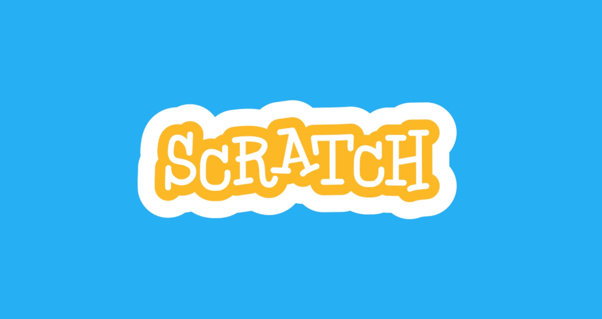

Software Network Ⅱ
Algorithm / Date structure
< Lecture contents >
2018/9/27 ~ 10/9
・1day, 9/27 [What's Algorithm]
・2day, 9/28 [Flowchart / Start Scratch!]
・3day, 10/9 [Sugoroku game]
What's Algorithm?
アルゴリズム（英: algorithm ）とは、数学やコンピューティングなど、あるいはそれに関連する分野において、 問題を解くための手順を定式化した形で表現したものを言う。「問題」はその「解」を持っているが、アルゴリズムは正しくその解を得るための具体的手順および根拠を与える。 さらに多くの場合において効率性が重要となる。
Wikipedia参照（検索：アルゴリズム）
授業の1日目では、アルゴリズムを自ら考え、課題を解決するという取り組みを行った。 その一例が「しめじソート」である。 課題：「しめじを長さ順に並べよ！」 この問いに対するもっとも有効な「アルゴリズム」はこうだ ↓
まず、しめじ全てを「２つ」づつ（奇数の場合は１つあまる）に分け、
２つに分けたしめじの各グループで長さを比べる。長い方を右へ、短い方は左へ配置を変える。
次に左から右隣のしめじと、最初は各グループで長い方（右側）同士で長さを比べ、長い方を外へ、短い方を元の位置に戻す。
そのあと、順位が確定した２番目と他のしめじとも同様に長さを比べ、１〜４番目までの長さ順に並べる。（これと同じのことを残りの全てのグループで行なう。）
この作業が終わったあとも、隣あうグループ同士で２つを長さ順に比較を行い、長い方を外へ、短い方は戻し、残ったしめじの中で最も長いものと長さを比べていく。（２つで比べ、１つは一方より長く、もう一つは短い）
このようなグループの併合を上記と同じ手順で、全ての併合が終わるまで行なう。（もちろん長さ順に並べながら。）
こうして「しめじソートのアルゴリズム」が完遂される。
人間の感覚や言語などが通用しないコンピュータや計算法式などにおいては「求め方」に様々な制限がある。 その中にアルゴリズムを取り入れることで、より効率的で、その機械的仕組みを（最大限に）活かした表現が可能になる。 ...ということがわかった。）
Charenge!
流しそうめんで平等にそうめんを分配できる方法
流しそうめんの問題点。
一般的な流しそうめんは、竹を半分に切断し、滑り台構造に組み立て、水を流し、その人工的な水流にそうめんを流す行為である。 私たちのクラスも10月に行われた「交流会」で流しそうめんをやった。 しかし、「流しそうめん」はそうめんを流すところから離れた地点にいる人ほど、麺を取りにくく、必然的に素麺を流す地点に近い人に多く取り分があるというという不公平がある。 実際、10月の流しそうめんでは参加人数が多いほど、この問題が目立ち、遠い人ほど素麺の取り分が少ない傾向にあった。 では、この問題を「アルゴリズムを用いて解決できないだろうか、（あるいは少しばかり改善できないか）」実現性を失わない程度の範囲で、できる限り「アナログ」の方法で考えてみた。
idea 1 :「素麺が流れるのなら、人も流れる。」
流し素麺の不公平を解消するために、人の位置を定期的に変え、循回させる方法。
流し素麺台の長さを30m、その中に20人の人が、10人づつ左右に分かれている時、一人と隣の人の間には1.5mほどの空きができる。
その均等に分割した1.5m間隔のガイドに従い、およそ１分に１回のペースで少しづつ、時計回り（もしくは反時計回り）に
移動していく。これで、20分くらいで1周することができ、全員が位置的な平等を得られる。（シンプルだが効率がいい上に、「簡単」。）
idea 2 :「回転流し素麺」
流し素麺の不公平を解消するために、流し台の構造を「楕円形」にする方法。
一方通行の不公平を防ぎ、「素麺を流す人」にとっても、構造的にどこからでも流しやすいので、均等に分配する調整が可能になる。
ただ、竹を配置するにあたって加工の難易度は上がる。
Flowchart!
次の授業の行程として、「身近に働く電子的なアルゴリズム」について考えた。信号機やゲーム機器など、多種多様なものがあげられたが、ここでは、簡易的なアルゴリズムとして「Vending Marchine(自動販売機)」を取り上げる。 対象に働くアルゴリズムを「フローチャート」形式で図式化し、かきおこすという作業の中で、自動販売機内部のメカニズムについての考察をした。
Scratch!

１：「行動を初期化（スタートからやり直す）仕組みがある。」
２：「始まりと終わりがあり、プログラミングとして完結している」
３：「誰がやっても同じように操作したり遊ぶことができる（明らかなバグがない）」
制作したゲーム ： Cut Maze
私がつくったのは「迷路」のゲームだ。仕組みはいたって単純。[start]から[gole]まで迷路を進んでいくだけだ。「矢印→」の場所からスタートし、「リンゴのスクリプト」にたどり着いたら「ゲームクリア」となる。なお、途中にある迷路の壁に触れたら「ゲームオーバー」となり、再びスタート位置に戻される。（↑上の[Cut Maze]は、クリックするとプレイできます。）
programming
見ての通りだが、一応捕捉説明をつけておく。まず、プログラムがスタートするのは[Space キー]が押された時だ。「移動構文」の「マウスの位置に移動」という言語を使い、マウスの位置まで、対象のスクリプトが移動する。次に、「ゲームオーバー」となる「迷路の壁」への当たり判定を設定するにあたり、「色」で判定をつける。移動スクリプトの境界線（黒色）が、壁の（緑）色に触れた時、「ゲームオーバー」となる。 「Game over」と２秒間言ったあと「鳴き音」を出して元の「スタート位置」へと戻るようになっている。ちなみに「→」の位置まで移動するのは「特定の場所へ移動」という構文を使っている。そして、「ゲームクリア」の判定は「リンゴに触れた時」である。これにも「ゲームオーバー」の時と同じ、色判定を用いている。最後に、移動するスクリプトの色（黒）がリンゴの色（赤）に触れた時、「Game clear」といい、スタート位置に戻るようにした。これがこのゲームプログラムの全容である。
Cut Maze play Movie
まとめ・考察
今回の授業が初の「プログラミング経験」となった。[Scratch]は初心者向けに開発された言語ではあったが、やはり慣れるまでに時間がかかったし、まだ「慣れた」と言ってもほんの少しだけである。量的な質を求めるなら、まだまだ練習不足であるが、この辺で締めくくろうと思う。ところで、今回の議題「アルゴリズム」だが、私はこの授業を終えて、最も原始的なアルゴリズムが「DNA」であるという授業での 豆知識程度に言われたことが一番印象に残っている。ちょうど１年前くらいだろうか。リチャード・ドーキンス著『利己的な遺伝子』という本に、生物は皆、「遺伝子に操作されている機械にすぎない。」と書かれていたのを見て衝撃を受けた（人間は少し違うが）。なるほど、遺伝子とは生物の歴史の中で、自然淘汰と、環境への順応によって高度に洗練されたDNA（アルゴリズム）によって動いている、生きているものなのか！そんな長い営みと、進化によって確立したアルゴリズムが私たち生命体の中で存在しているのかと思うと、なんだか誇らしい気分になるのは私だけか？しかし同時に、生命の営みとは単なる「アルゴリズムと計算能力の結果にすぎないモノ」なのではないか、と唯物論的なことも考えてしまった。その辺りはどうなのだろうか。